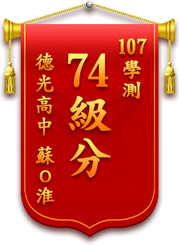
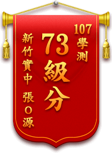
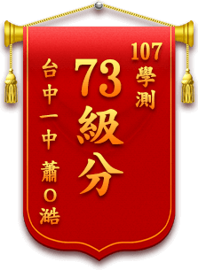
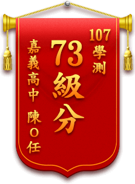
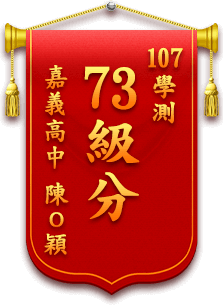
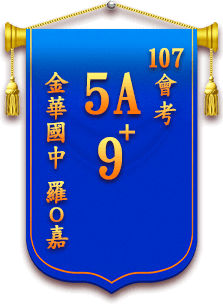

-
107年
-
106年






72級分
陳O宇台中一中
72級分
蘇O奇馬公高中
72級分
李O澤武陵高中
72級分
郝O愛台南女中
72級分
林O任高雄中學
72級分
呂O儒嘉義高中
72級分
蔣O承羅東高中
72級分
劉O瑋武陵高中
71級分
游O瑩中山女高
71級分
黃O均嘉義女中
71級分
劉O彤武陵高中
71級分
林O頡新竹女中
71級分
劉O伶嘉義女中
71級分
蔡O芩中科實中
71級分
宋O瑞台南一中
71級分
張O豪嘉義高中
71級分
盧O偉嘉義高中
71級分
王O霆台中一中
70級分
林O哲嘉義高中
70級分
趙O寧北一女中
70級分
楊O智成功高中
70級分
溫O丞中大壢中
70級分
張O之新竹高中
70級分
郭O琳台南一中
70級分
何O媮台中女中
69級分
蘇O翔成功高中
69級分
莊O翔麗山高中
69級分
游O宇六和高中
69級分
劉O瑜新竹女中
69級分
陳O全高雄中學
68級分
侯O臻新竹女中
68級分
邱O凱中壢高中
68級分
張O瑋武陵高中
68級分
曹O珺武陵高中
68級分
戴O真新竹女中
68級分
蘇O禎新竹高中
68級分
黃O理國立苑高
68級分
張O洋新竹高中
68級分
蕭O恩高雄中學
68級分
謝O誠高雄中學
68級分
林O臻武陵高中
67級分
陳O晴北一女中
67級分
曾O豪師大附中
67級分
劉O箴中壢高中
67級分
官O克新竹實中
67級分
蔡O翔新竹高中
67級分
許O瑋明道高中
67級分
楊O任高雄中學
67級分
吳O儀德光高中
67級分
陳O君復旦高中
67級分
林O珊台中女中
66級分
黃O諭新竹高中
66級分
謝O佑竹林高中
66級分
吳O嘉師大附中
66級分
郭O恩中壢高中
66級分
溫O傑武陵高中
66級分
林O涵新竹女中
66級分
吳O熹新竹高中
66級分
顏O宇衛道中學
66級分
吳O妘高雄女中
66級分
陳O晉高雄中學
65級分
魏O育竹北高中
65級分
呂O绮武陵高中
65級分
呂O霓曉明女中
65級分
王O婷港明高中
65級分
羅O城高雄中學
65級分
宋O億瑞祥高中
64級分
于O程松山高中
64級分
曹O詠建國中學
64級分
翁O凱成功高中
64級分
張O言松山高中
64級分
楊O筑板橋高中
64級分
蕭O融武陵高中
64級分
楊O硯內壢高中
64級分
蕭O傑竹南高中
64級分
邱O平仁愛中學
64級分
孫O貽台中女中
64級分
楊O禧台南一中
64級分
高O雲高雄中學
64級分
黃O昀高雄中學
64級分
李O澍中正高中
64級分
翁O凱成功高中
63級分
栗O軒中山女高
63級分
湯O霆師大附中
63級分
李O蓉中壢高中
63級分
魏O丞新竹高中
63級分
張O豫新竹高中
63級分
鐘O維文華高中
63級分
林O霈僑泰高中
63級分
溫O安台南一中
63級分
郭O皜大同高中
62級分
楊O潔松山高中
62級分
李O曜武陵女中
62級分
林O甄海山高中
62級分
黃O嘒中山女中
62級分
張O瑄內壢高中
62級分
黃O瑜中壢高中
62級分
李O明桃園高中
62級分
簡O宇桃園女中
62級分
徐O慈觀音高中
62級分
魏O益竹南高中
62級分
吳O妍新竹女中
62級分
阮O魁道明中學
62級分
陳O釩台南一中
62級分
邱O菁台南女中
62級分
黃O綸高雄中學
62級分
邱O慶高雄中學
62級分
羅O城鳳新高中
62級分
蕭O高雄中學
61級分
吳O琪中山女高
61級分
彭O祖板橋高中
61級分
張O駿板橋高中
61級分
王O云桃園高中
61級分
鄧O大園高中
61級分
林O訊桃園高中
61級分
扈O元成功中學
61級分
蔣O蓁協同中學
61級分
歐O呈陸興中學
61級分
黃O齊鳳山高中
61級分
王O羽橋頭高中
61級分
陳O維小港高中
61級分
黃O壹新豐高中
61級分
郭O寬東莞台商子弟
60級分
許O中板橋高中
60級分
林O君中崙高中
60級分
張O禎新莊高中
60級分
黃O文宜蘭高中
60級分
邱O筠新北高中
60級分
謝O澤育達高中
60級分
謝O晴武陵高中
60級分
林O嘉復旦高中
60級分
薛O洋平鎮高中
60級分
蔡O琪武陵高中
60級分
潘O蓁新竹女中
60級分
陳O澤竹北高中
60級分
王O凡曉明女中
60級分
許O馨文華高中
60級分
胡O甄德光高中
60級分
林O羽屏東女中
60級分
林O恩高雄中學
60級分
應O樵武陵高中
60級分
李O瑄港明中學
因版面有限，僅放部份績優學生

-
107年
-
106年

5A10+
呂O越青溪國中
5A10+
渠O宇天母國中
5A10+
李O展華興中學
5A10+
林O均台中大明中學
5A10+
朱O綱復興實中
5A10+
陳O廷道明國中
5A10+
陳O大安國中
5A10+
吳O茹龍門國中
5A9+
林O鈺延平中學
5A9+
羅O嘉金華國中
5A9+
林O臻台南崇明國中
5A9+
江O晨興雅國中
5A9+
謝O庭中興國中
5A9+
陳O佑華盛頓中學
5A9+
陳O璋台南學甲國中
5A9+
曾O泰復旦中學
5A8+
葉O丞前峰國中
5A8+
何O祐惠文中學
5A8+
黃O民桃園國中
5A8+
張O芃台南安平國中
5A7+
彭O叡華盛頓中學
5A7+
莊O宬三重國中
5A7+
林O辰北興國中
5A7+
鄭O欣南門國中
5A7+
蔡O鈞明道中學
5A6+
邱O蝶育賢國中
5A6+
陳O新建功中學
5A6+
林O珊嘉義國中
5A6+
賴O翔重慶中學
5A6+
鄭O皓衛道中學
5A6+
陳O軒福豐國中
5A5+
吳O甫培英國中
5A5+
蔡O秀北投國中
5A5+
施O閎土城國中
5A5+
郭O誠台南慈濟中學
5A5+
郭O綦台北石牌國中
5A5+
李O岳百福國中
5A4+
吳O騰文山國中
5A4+
劉O薰政大附中
5A4+
臧O彥時雨中學
5A4+
簡O忻同德國中
5A4+
邱O貳北興國中
5A4+
馬O峻金華國中
5A3+
唐O理復興國中
5A3+
洪O瑩嘉義民生國中
5A3+
陳O安衛道中學
5A2+
黃O瑄慈文國中
5A2+
胡O淇宜蘭復興國中
5A2+
張O皓新竹自強國中
因版面有限，僅放部份績優學生